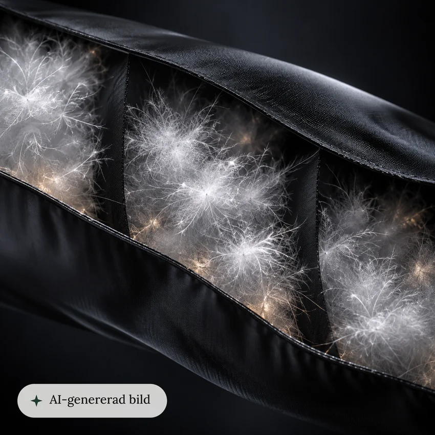
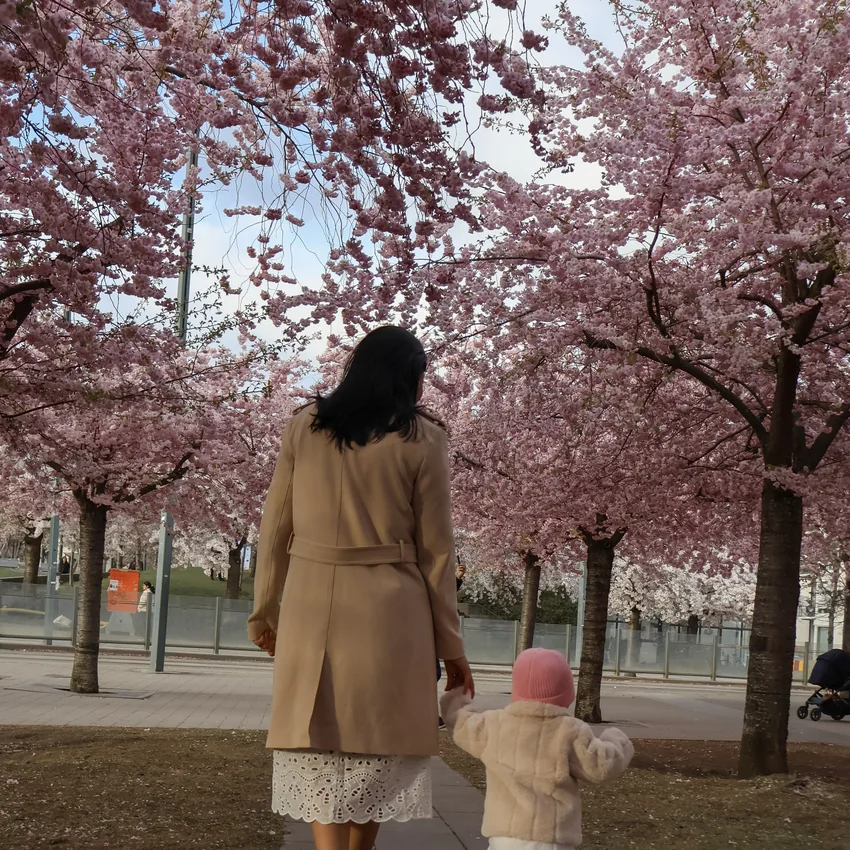
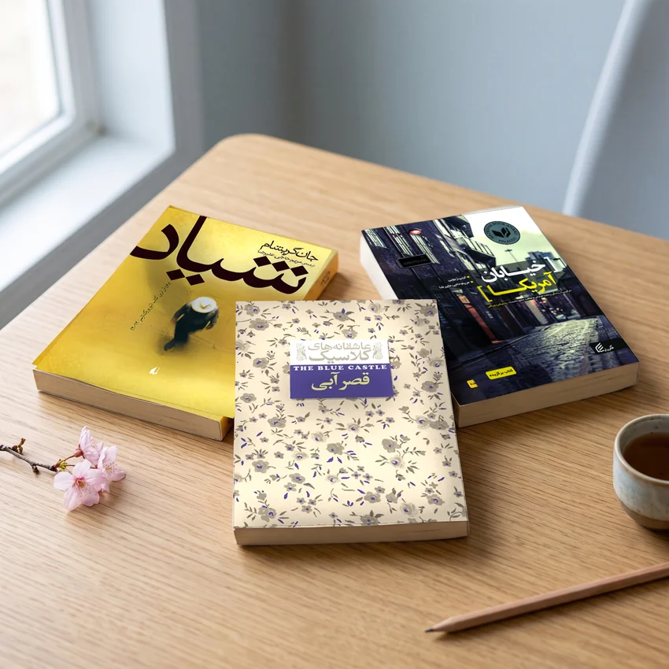

Content, made with
UX methods.
I create content the same way I design interfaces: I start with research, create the content, then test it with real people.
Before design, I wrote SMS copy and SEO articles and translated three books.
Content I’ve made
Raised on picture books. Still thinking in colour.
-

AI imagery · Haglöfs
Labelled AI close-up
- Goal
- Make the down and shell details visible, which normal photos can’t show.
- Method
- I generated it with AI, labelled it on the image, then tested it with 8 users.
- What I learned
- Most weren’t put off by AI imagery. A few raised sustainability concerns, not quality ones.
-

Photography · Maya Photography
Small moments
- Goal
- Capture real family moments, not posed ones.
- Method
- I observe quietly and wait for the small details: light, hands, a glance.
- What I learned
- The camera taught me to notice what people don’t say.
-

Writing · Translation
Three translated books
- Goal
- Make English novels feel natural for Persian readers.
- Method
- I read the whole book first, then retold the story in the writer’s tone, in a way that feels familiar to Persian readers. An editor checked it against publisher and government guidelines.
- What I learned
- Every word matters, in a book or in a button.
Published as Maryam Hajialireza
AI is my studio
assistant.
Research
Claude and ChatGPT help me plan research and cluster findings.
Prototyping
Fast mockups and prototypes. This site was designed in Figma and coded with Claude.
Images
Image work with AI tools like Magnific, always labelled when it’s AI-generated.